Confidence Level Routine¶
Although the general, mass conservation, and semi-diffusive approaches can quickly provide confirmation of bistability for most examples, this may not always be the case. In fact, an important item of discussion is that these approaches cannot exclude bistability, even if a large amount of random decision vectors are explored. It is this uncertainty that we wish to address. This is done by assigning a probability that the minimum objective function value achieved is equal to the true global minimum. We achieve this probability by considering a slightly modified version of the unified Bayesian stopping rule in [BGS04] and Theorem 4.1 of [SF87], where the rule was first established.
Let and denote the probability that the optimization routine has converged to the
local minimum objective function value, say  , and global minimum objective function value, say
, and global minimum objective function value, say  .
Assuming that for all local minimum values we may then state that the
probability that 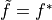 is as follows:
.
Assuming that for all local minimum values we may then state that the
probability that 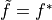 is as follows:
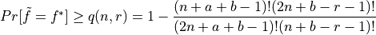,
where  is the number of initial decision vectors that are considered, 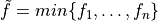
,
is the number of initial decision vectors that are considered, 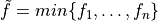
,  and
and  are parameters of the Beta distribution 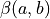, and
are parameters of the Beta distribution 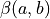, and  is the
confidence level. We then let
is the
confidence level. We then let  be the number of for 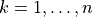 that are in the
neighborhood of 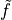.
be the number of for 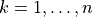 that are in the
neighborhood of 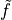.
Given our minimum objective function value is zero, for some networks it may be the case that the are nearly
zero with respect to machine precision. For this reason, we say that is in the neighborhood of
if
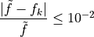.
This means that is in the neighborhood of if the relative error of and
is less than 1%. If is considered zero with respect to the system’s minimum positive normalized float, then we
consider this value zero and provide 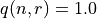, skipping the computation of 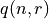. Thus, we can state that
the probability that the obtained is the global minimum (for the prescribed bounds of the decision vector)
is greater than or equal to the confidence level . Using the standard practice in statistics, it should be
noted that 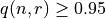 is often considered an acceptable confidence level to make the conclusion that
is the global minimum of the objective function.
For information on how to enable the construction of a confidence level for each of the approaches, please refer to the following for each approach:
- Mass conservation approach:
- If using
crnt4sbml.MassConservationApproach.run_optimization()set confidence_level_flag = True and and prescribe a value to change_in_rel_error (if applicable) - If using
crnt4sbml.MassConservationApproach.run_mpi_optimization()set confidence_level_flag = True and and prescribe a value to change_in_rel_error (if applicable)
- If using
- Semi-diffusive approach:
- If using
crnt4sbml.SemiDiffusiveApproach.run_optimization()set confidence_level_flag = True and prescribe a value to change_in_rel_error (if applicable) - If using
crnt4sbml.SemiDiffusiveApproach.run_mpi_optimization()set confidence_level_flag = True and and prescribe a value to change_in_rel_error (if applicable)
- If using
- General approach:
- If using
crnt4sbml.GeneralApproach.run_optimization()set confidence_level_flag = True and prescribe a value to change_in_rel_error (if applicable)
- If using